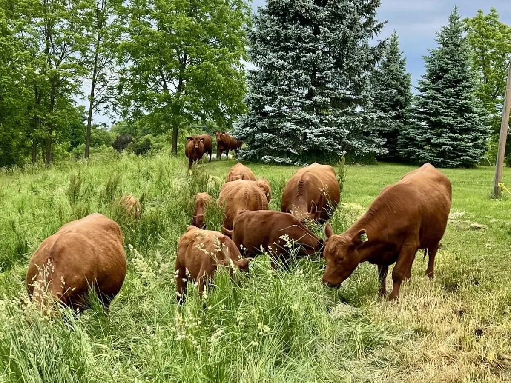

Rotational grazing means moving cattle among pasture areas instead of leaving the herd on the same ground for an entire season. At BTC Beef, it is part of how we manage our grass-fed Red Angus cattle and our pasture in Caledonia.
What rotation changes
When cattle graze a pasture, they remove leaf growth and put pressure on the plants underfoot. Moving the herd gives that grazed area a rest period before cattle return. During that recovery window, plants can rebuild leaf area and continue growing.
The goal is not constant movement for its own sake. The goal is to match grazing pressure and recovery time to what the land can support. Growth changes with rainfall, heat, soil moisture, and the time of year, so a useful grazing plan has to remain flexible.
Three practical benefits
1. Recovery time for forage
Plants need leaves to capture sunlight and regrow. Moving cattle before an area is repeatedly grazed down gives desirable forage a better opportunity to recover. That helps keep pasture productive over the season rather than using the easiest-to-reach plants again and again.
2. More deliberate pasture use
Cattle naturally select their favourite plants and return to them when they can. Rotation lets a farmer control where the herd grazes and for how long. That creates a clearer picture of what has been used, what needs rest, and where the herd should go next.

3. Better day-to-day observation
Moving cattle regularly creates more opportunities to look closely at both the herd and the land. Farmers can watch forage height, plant recovery, ground cover, water access, and cattle behaviour. That information matters because a fixed calendar cannot account for every dry spell or burst of growth.
Rotational grazing is not a formula
There is no universal number of days that works for every farm or every month. A pasture may grow quickly in one period and slowly in another. The number of cattle, available forage, weather, and soil conditions all affect the decision.
Why it matters to a beef customer
Pasture management is part of the work behind farm-direct beef. It shows that the production system begins well before a cut reaches the freezer. When customers know the farm, they can ask how cattle are raised and understand the decisions behind the product.
BTC Beef uses regenerative, rotational grazing practices with grass-fed Red Angus cattle. We keep the claim straightforward because the details belong to the farm and its actual conditions—not to a generic label.
The short version
- Cattle graze one pasture area, then move so that area can recover.
- Rest periods help plants rebuild before they are grazed again.
- Timing changes with weather, forage growth, and herd needs.
- Regular movement supports closer observation of cattle and pasture.
Want to see more of the farm? Browse the BTC Beef farm gallery, or read why a direct relationship with a nearby farmer matters in Why Buying Local Beef Matters.